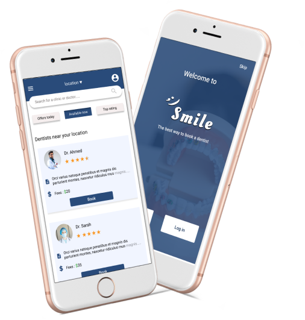
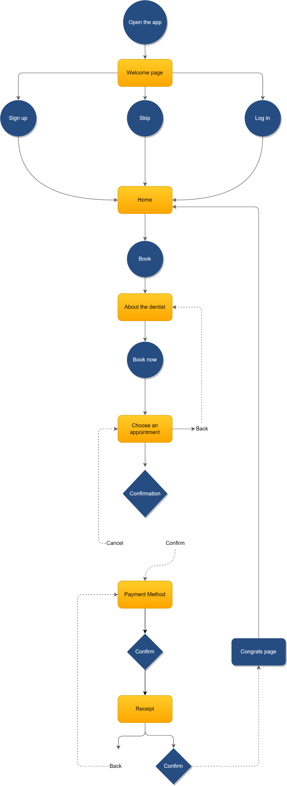
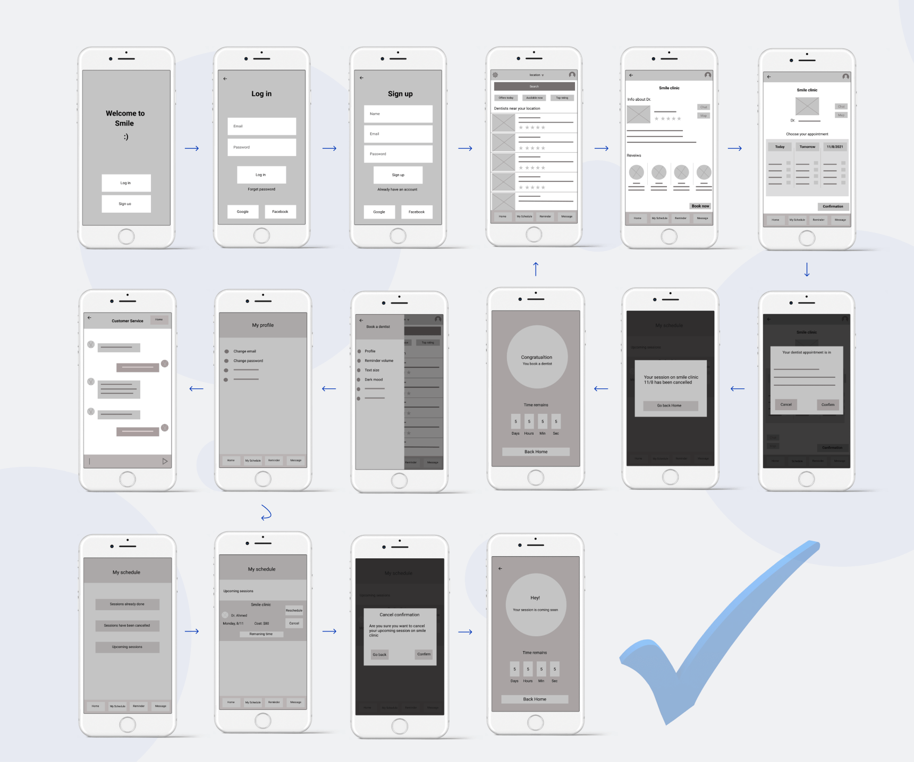
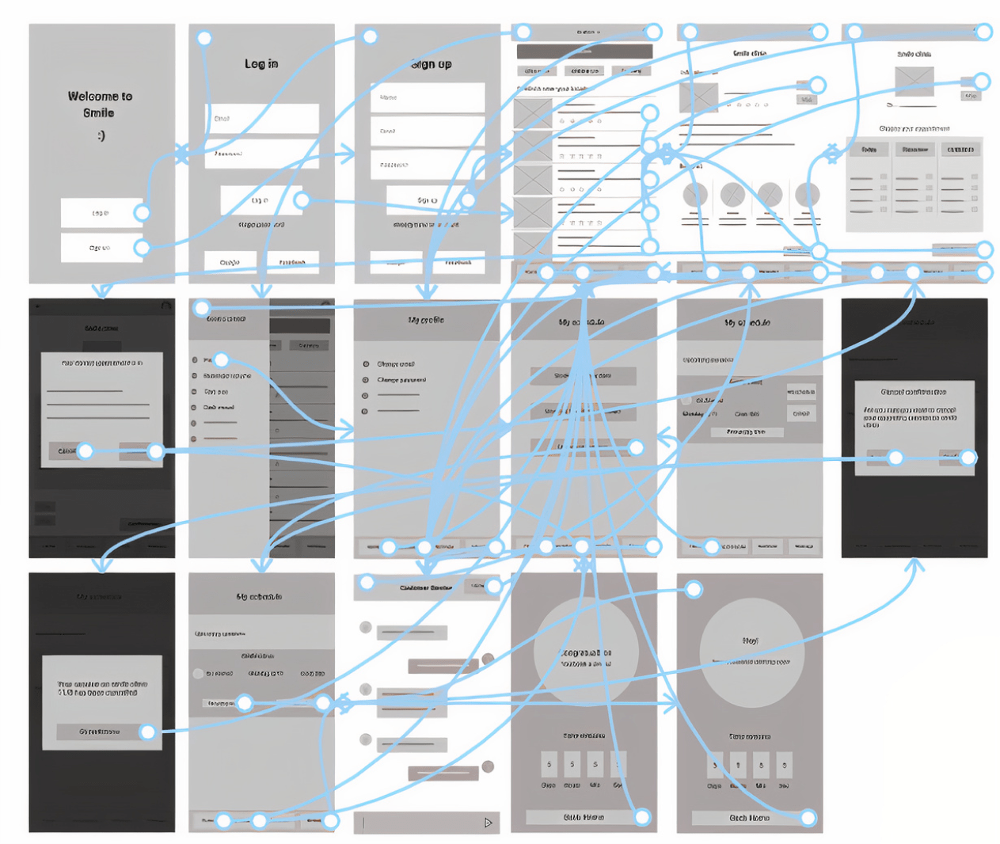
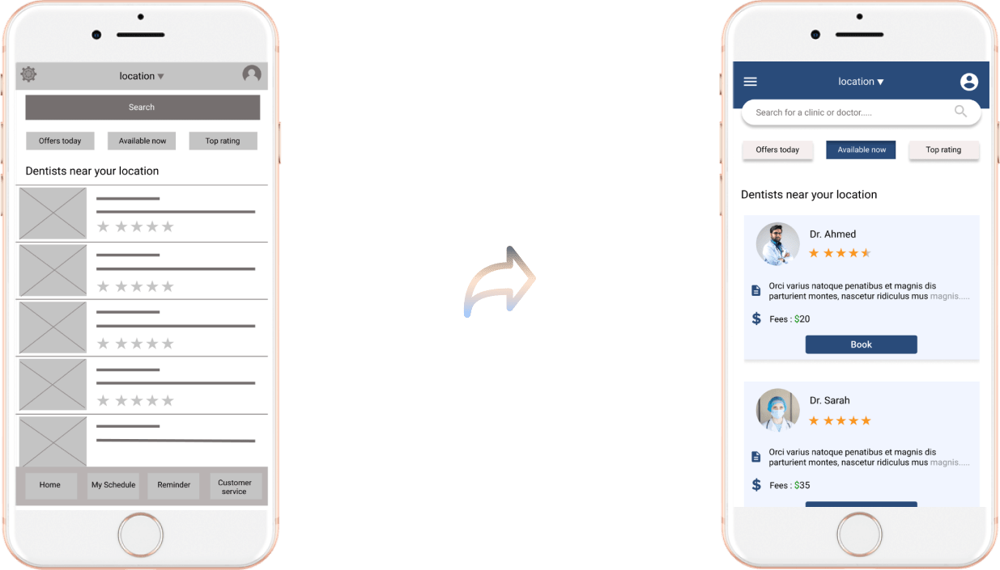
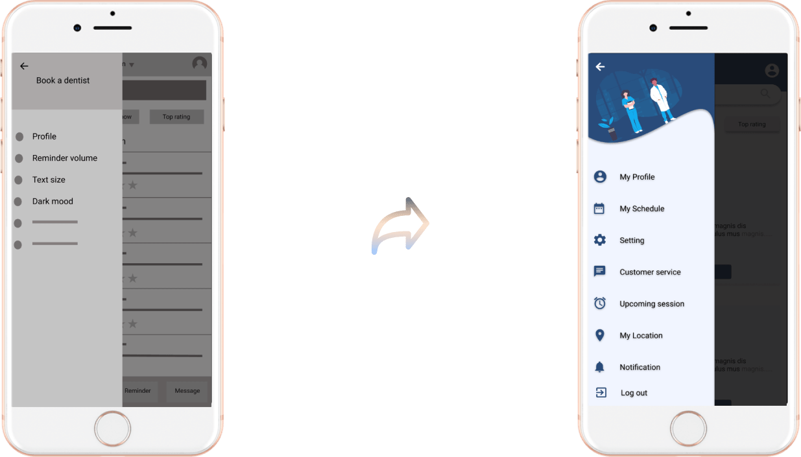
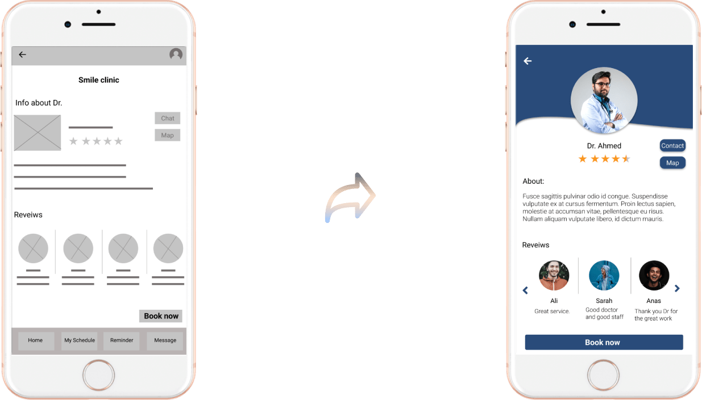
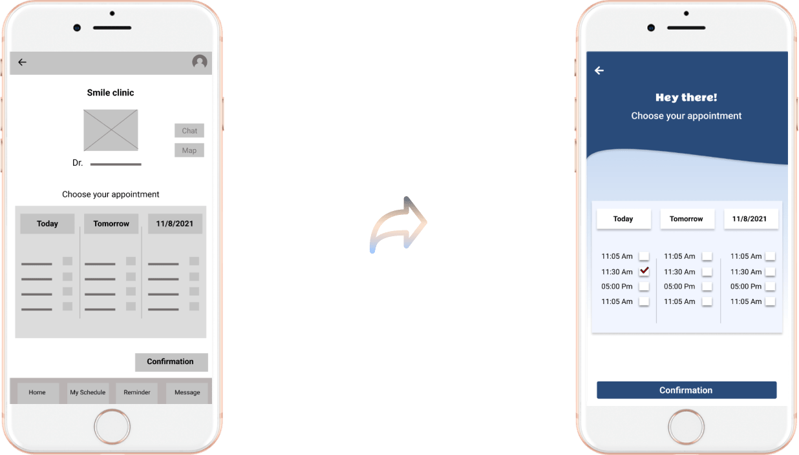

The best way to book a dentist
Role: The entire app from scratch to end
Project background
I created this app to assist people of all ages in finding a suitable dentist and scheduling an appointment from anywhere, and if they need assistance, chat service is available 24/7 to assist them. I want to know if the user has a pleasant experience chatting and arranging dentist appointments through the app, as well as any issues they may have.
Goals
1. Create an application that is basic and easy to
use for people of all ages.
2. Create a quick and easy way to book dentists from
anywhere, at any time.
3. To make it easier for people, particularly the
elderly and the busy, to plan an appointment with a doctor without
having to wait in clinics.
4. Providing customer support to individuals who are
unable to finish the reservation procedure.
What is special about the app?!
Initially, I hoped to design an application that would have a good impact on people's lives. I intended to make an application for booking dentists that is simple and straightforward to use so that anyone could use it without difficulty. Waiting at clinics was becoming a problem for many individuals, including the elderly, who cannot handle sitting in clinics for lengthy periods of time waiting for their turn, as well as those who are working or busy, as well as others who are weary of waiting. As a result, having an app that makes it simpler for consumers to book the proper dentist for them, whether in terms of pricing or location, is something I think is fantastic. Furthermore, the app offers a customer support (chat) that is accessible 24 hours a day, 7 days a week to assist anyone who is unable to schedule a dentist or wishes to learn more about the app. However, I did not stop at my viewpoint because this application is for the user, not for me, so I had to conduct some interviews with people of various ages and professions to determine whether or not this application would be beneficial in their life. So, do you want to learn more about some of the users? Let's go together and meet them.
Meet the users

Name: Ali
Age: 60
Education: Bachelor of Agriculture
Ali is a 60-year-old man who lives with his wife in Alexandria and has three grandchildren. Ali has osteoporosis, which has developed with his old age, and therefore he cannot sit for long periods, as he feels exhausted. When they go to a dental clinic or hospital, most of the time, they have to wait for a while until it's their turn. They hope to be able to know their exact time before coming to the clinic so that they do not have to wait like this way.
Ali is a 60-year-old man who lives with his wife in Alexandria and has three grandchildren. Ali has osteoporosis, which has developed with his old age, and therefore he cannot sit for long periods, as he feels exhausted. When they go to a dental clinic or hospital, most of the time, they have to wait for a while until it's their turn. They hope to be able to know their exact time before coming to the clinic so that they do not have to wait like this way.
Competitive Analysis
At the start of creating an application, I must look at competitors
to learn more about comparable apps and how I can benefit from their
features while also providing more valuable features for the user so
that I can provide an unique user experience. Although I could not
uncover any applications or websites that are exactly like what I
want to build, there are several that may be studied and used to
benefit from some of their amazing qualities.
I attempted to make the Smile app easier to use and navigate through
its pages. Furthermore, I worked to keep the design basic and the
page lack of elements that may distract the user and make him/ her
impossible to distinguish between the stages required to book a
dentist appointment.
So, what are some of the aspects that I should keep in mind?
Screens that are simple.
The app is simple to use and navigate.
Clear buttons that describe what it should perform without having to click or guess.
Use of readable fonts.
Adhere to Gestalt principles.
Consistency.
Starting the Journey
I began by drawing and deciding on the user flow by diagramming to understand how the user will interact with the app and how I would build the app in a simple manner. The most crucial aspect of UX design is to keep the user in mind; the user should be front and center. So, diagramming the user flow is a good place to start when thinking how the user will interact with the app. So, let's have a look at the diagram together!
Paper wireframes
Paper wire frames are an essential part of the design process. After I have completed the general form (Diagramming) of how to go around the application so that the user can finish the process effectively and without any barriers, I begin developing the wireframes on paper. I must decide how the app will work. I want it to be basic, straightforward, and free of distractions that might lead the user astray. Of course, I may make changes to the wireframes later if I find or think of something new. Actually, I adjusted some things in the following stages and added more screens and features.
The most essential thing is to put the user front and center. So, let's have a look at the paper wireframes for the application, which is a step closer to completion. In these frames, I attempted to simplify the user's path so that everyone can quickly navigate between its pages and complete the process.

Wireflow & prototype
After modifying some of the wireframes on paper, I began creating the wireframes using Figma. I adjusted a few details since the design on paper may differ from the design on computer programmes.
Low-fidelity prototype
Then comes the low-fidelity prototype. A low-fidelity prototype is just as vital as any other stage of the design process. It demonstrates how the app will work when the user uses it. What does this button accomplish, and what page should show when the user clicks it? As seen, I do not focus on colors or visuals at this stage (Lo-fi wireframes & prototype) but rather on navigation between pages and how to make the app as easy, accessible, usable, and beneficial as possible for every user. Following the lo-fi prototype, I may invite some users to check out the app and complete various tasks to determine how user-friendly the app is. Let's continue on our journey!
Test & Feedback
After I finish the low-fidelity prototype, I should test it in real life before moving to high-fidelity wireframes and prototype. So, I do a brief study (Moderated research) on a few individuals, assigning them tasks and seeing how they engage with the app. I discovered that there are several things that should be altered after putting down how they feel and what they found difficult:
Customer service; some people have difficulty contacting customer service. Some believe that it should be in the settings and so, they are on the wrong path.
Some people were unable to cancel or reschedule a planned appointment.
Location. More options are needed to make it simple for anybody to change the location.
For some, the booking buttons were not obvious.
Iteration & Hi-fi design
After getting some user feedback on the app, I was able to figure out what was bothering them while using it, and I was able to remedy those issues before moving on to the next step of the process. This stage is critical before I begin the high-fidelity prototype so that I can launch an app that is simple to use and meets the needs of the users. Because design is an iterative process, I may make changes to the design even after it has been launched. For now, let's look at some low-fidelity pages and how they appear after iteration and switch to high-fidelity design.
Home page
I attempted to address some of the issues raised by the user on the main page. To begin, I make the location clear at the top of the page. Then, instead of settings, I convert it to a hamburger menu because some people aren't sure what should be in these settings and end up clicking it more than once to complete their process. Finally, I reduced the number of nearby dentists on the page and made it scroll down to make the screen more basic and distraction-free.
Navigation bar
(Hamburger Menu)

We've arrived at the navigation bar. Instead of putting the settings icon at the top of the screen and a navigation bar down the screen, I try to make it easier for users by removing the down bar and replacing settings with a hamburger menu that includes settings. Furthermore, because more than one user thinks that altering the location and rescheduling or canceling any session should be in the settings, I include both of them as shown.
Info about Dr. page
The biggest issue with this page is that the booking button is not obvious, and some users return to see whether they missed any steps. As some users suggest, adjusting the booking button and centering it is preferable. Of course, I changed it because I sought to provide a pleasant user experience.
Appointment page
I also have some troubles here. First, there is a confirmation button, which has the same issue as the booking button. As a result, I modify it as well and center it. Then, I deleted the information about the dentist since I noticed that I was repeating the same information on two pages. This makes the appointment page more straightforward and allows the user to focus just on selecting an appointment without being distracted by anything else. Finally, in order for the design to be consistent, the page should have the same or a similar style.